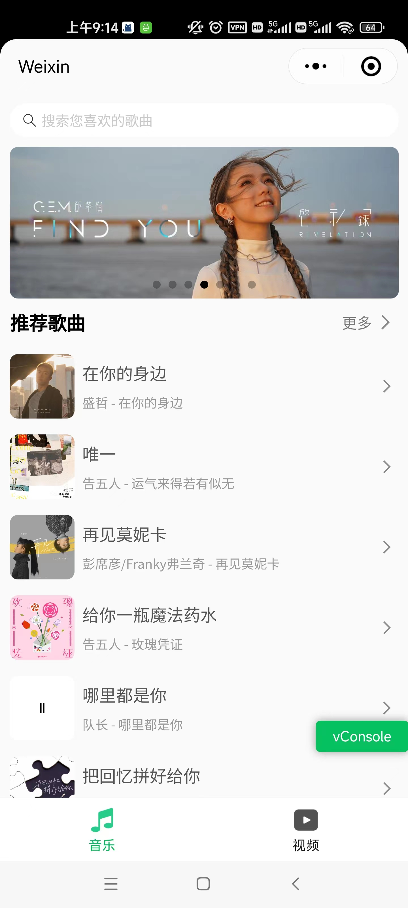
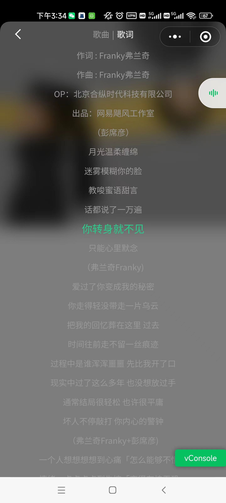
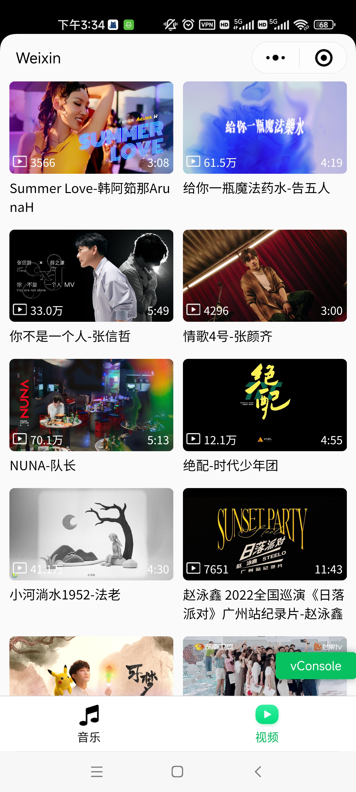

陈靖宇
男 | 26岁 | 前端开发工程师 | 南京
手机：17826020781 | 微信：robot-90- | 邮箱：1993456181@qq.com
{kind=link}
教育经历
~ 池州学院 机械设计制造及其自动化 本科
工作经历
-
南京一束光信息科技有限公司
前端开发工程师 --> 前端主管
~- 初入公司为前端开发，半年后升为前端主管，逐步负责管理前端人员
- 使用vue3进行pc端网页开发，使用uniapp进行移动端开发
- 牵头制定前端开发规范，审核前端代码，检查前端工作
- 拆解开发任务，制定前端开发计划，分配前端人员
-
南京时序智能科技有限公司
前端开发工程师
~- 负责PC端网页的前端开发工作
- 负责数字孪生平台前端模块的部分设计和开发工作
-
南京智链记忆信息技术有限公司
前端开发工程师
~- 负责APP内嵌H5页面、PC端的管理后台和微信小程序的前端开发工作
- 协助需求人员完成需求分析工作，协同后端平台开发人员完成平台开发
项目经历
-
桃子商城
源码链接 项目预览技术：Vue2、Vue Router、Vuex、Axios、SCSS、Vant
描述：桃子商城包括轮播图、商品分类展示、加入购物车、上拉加载更多等功能的购物应用。
亮点：对 Axios 进行了封装，对 Axios 有了新的认识，将其总结成了一篇博客《axios 精进》。
-
橙子记账
源码链接 项目预览技术：Vue2、Vue Router、Vuex、Scss、localStorage
描述：这是我从自己的需求出发，独立设计及实现的极简记账应用，包括添加标签、记账、统计等功能。
-
会动的皮卡丘
源码链接 项目预览技术：HTML、JS、CSS、jQuery
描述：这是我在学习 CSS3和动画 时制作的一个可爱作品
-
梅子音乐
源码链接技术：WXML、WXSS、WXS
描述：梅子音乐微信小程序，包括音频播放、歌词展示、视频播放、背景播放、排行榜等功能。
  
技能
- 熟悉页面制作技巧，能将设计稿完美还原
- 熟悉前后端分离技术，包括 AJAX、前端路由、Cookie、Session 等
- 熟练掌握 Vue2全家桶 的使用，包括 VueCli、VueRouter、Vuex、Axios 等
- 熟练掌握 Vue3全家桶 的使用，包括 Composition API、Vite、VueRouter、Pinia、Axios 等
- 熟悉 ES6，包括 let / Promise / await / 析构赋值 / class
- 熟悉 TS，包括 类型声明 / 接口 / 抽象类 / 泛型
- 了解 Webpack 的配置和优化
- 掌握 Git/GitHub 工作处理流程
- 善于面向 Google、chatgpt 及 StackOverflow 编程，有总结书写技术博客的习惯